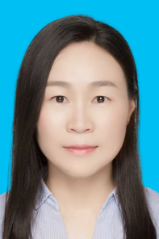

MEMBERS
Teachers
Mingwu Zhang
Professor • Ph.D.
Dr. Mingwu Zhang is a professor with the School of Computer Science and Artificial Intelligence in Hubei University of Technology, and the director of Institute of Cyber Security in HBUT. From 2010 to 2012, he has been a JSPS Fellow of Japan Society of Promotion Sciences (JSPS) at Institute of Mathematics for Industry in Kyushu University, Japan. From 2015 to 2016, he has been a Senior Visiting Professor with the School of Computing and Information Technology, University of Wollongong, Australia. His research interests include networks and data security, secure computation and privacy preservation in big-data, AI, clouds and crowdsensing, etc.

Hua Shen
Professor • Ph.D.
Yuanyuan Zhang
Associate Professor • Ph.D.
Gang Shen
Lecturer • Ph.D.
Yuzhu Wang
Lecturer • Ph.D.
Yu Chen
Lecturer • Ph.D.